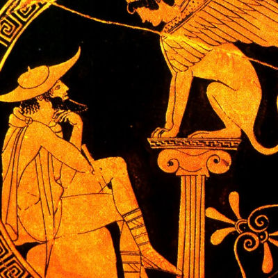
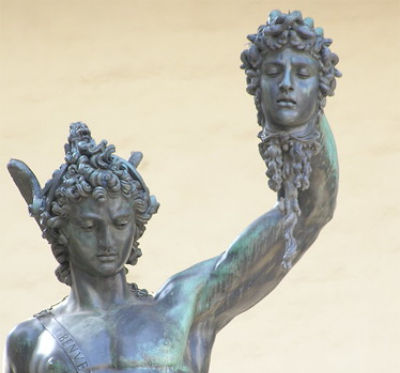

Principais Heróis da Mitologia Grega
Héracles
Também conhecido como Hércules pelos romanos, esse famoso herói da mitologia grega era corajoso e sempre disposto a ajudar os que precisavam. Héracles era um semideus, filho de Zeus e Alcmena, uma mortal. Volúpia e Virtude, certa vez, tentaram seduzi-lo. A primeira prometeu uma vida prazerosa e tranquila; a segunda, uma vida de trabalho e de glórias. O amor de Virtude foi o escolhido.
Dentre tantas aventuras vividas por Héracles, uma delas e a mais importante foi o cumprimento dos Doze Trabalhos. Um deles foi matar Hidra, um monstro mitológico que possuía várias cabeças de serpente. Quando uma de suas cabeças era cortada, outra nascia imediatamente no mesmo lugar.
Limpar o estábulo do rei Augéis também foi outro desafio. Um rebanho ficava nesse estábulo, então uma grande sujeira era acumulada. Engenhosamente, Héracles desviou o curso do rio Alfeus para que suas águas limpassem tudo.
Agora, sua maior proeza foi a de descer ao reino de Hades, onde habitavam os espíritos dos mortos, para capturar o cão de guarda Cêrberos. Ao fazer isso, o semi deus venceu a própria morte.
Aquiles
Aquiles era uma excelente guerreiro. Com muitas facilidades, participou da Guerra de Troia, onde foram vitoriosos. Seu único ponto fraco era o calcanhar; logo, morreu ao ser atingido por uma flecha envenenada justamente nesse local por Páris.
Teseu
Filho do Rei Minos que, auxiliado por Ariadne, mata o Minotauro no labirinto de Creta.
Perseu
Herói que cometeu a façanha de matar, decapitando, a Medusa, monstro mitológico.
Normalmente, os grandes heróis é que tinham direito a viver bem depois da morte. Ao invés de irem para o reino subterrâneo do deus Hades, eles rumavam para o Campo Elísios.
Hércules
Filho do deus Zeus e de Alcmena, seu nome significa “aquele que dispensa o calor e a claridade” e sua principal qualidade era a força física.
Hércules talvez seja o semideus mais conhecido da mitologia grega. Ao menos, o mais icônico. Segundo as lendas, ele derrotou diversas criaturas tenebrosas, incluindo a Hidra, o Leão de Nemeia e o cão de três cabeças, Cérbero.
Ele é descrito como usando uma vestimenta de pele de leão em sua cabeça e carregando um porrete.
Ulisses
Foi um herói da Guerra de Troia, destacando-se por sua prudência e astúcia. Durante a batalha, os gregos venceram pelos conselhos de Ulisses.
Um de seus mais famosos ardis foi sua estratégia de construir o Cavalo de Troia, um cavalo de madeira que permitiu a entrada dos exércitos gregos na cidade.
Atalanta
É conhecida por matar dois centauros que a tentaram estuprar. Quando ela nasceu, o seu pai, rei da Árcadia, queria um menino, por isso, a deixou para morrer numa montanha. A bebê Atalanta foi encontrada por uma ursa, que cuidou da menina e a amamentou.
Atalanta, que era filha da deusa Ártemis, aprendeu a lutar e caçar como um urso. Por causa da sua força e agilidade derrotou um javali que devastava a terra e as plantações de Arcádia.
Ajax
Filho de Télamon e Peribeia, seu nome significa “que geme ou lamenta”. Herói guerreiro que também atuou nas batalhas da Guerra de Troia.
Ajax era muito forte e ágil, porém, tinha um defeito, ele era extremamente teimoso e nunca pedia a ajuda dos deuses durante as batalhas.
Belerofonte
Forte e valente guerreiro, filho de uma humana com o deus Poseidon. Domou o cavalo alado Pégaso e matou a Quimera, um monstruoso produto da união entre Equidna, metade mulher, metade serpente, e o gigantesco Tífon.
A Quimera tinha cabeça e corpo de leão, com outra cabeça anexa, de cabra ou de dragão, rabo de serpente e expelia fogo pela boca.
Helena de Troia
Helena era filha de Zeus e Leda. Ela foi disputada por muitos pretendentes e seu sequestro foi o motivo para a Guerra de Troia. Quando a semideusa foi sequestrada por Paris e levada para Troia, a grande guerra, que durou cerca de 9 anos, aconteceu na intenção de seu resgate.
Édipo
Único a conseguir, com sua inteligência superior, decifrar o enigma da Esfinge. Tornou-se rei de Tebas.
Édipo é um semideus conhecido, ele matou o pai e se casou com a sua mãe. Sua história tem início quando seu pai, de nome Laio, consultou o Oráculo de Delfos e o espírito contou a profecia que o filho iria matá-lo e desposar a mãe.
Acreditando nas palavras sobre a maldição, o pai abandona Édipo no Monte Citerão, pregando os pés da criança com o objetivo de deixá-la morrer.
Édipo consegue sobreviver e, tempos depois, a profecia se realiza.